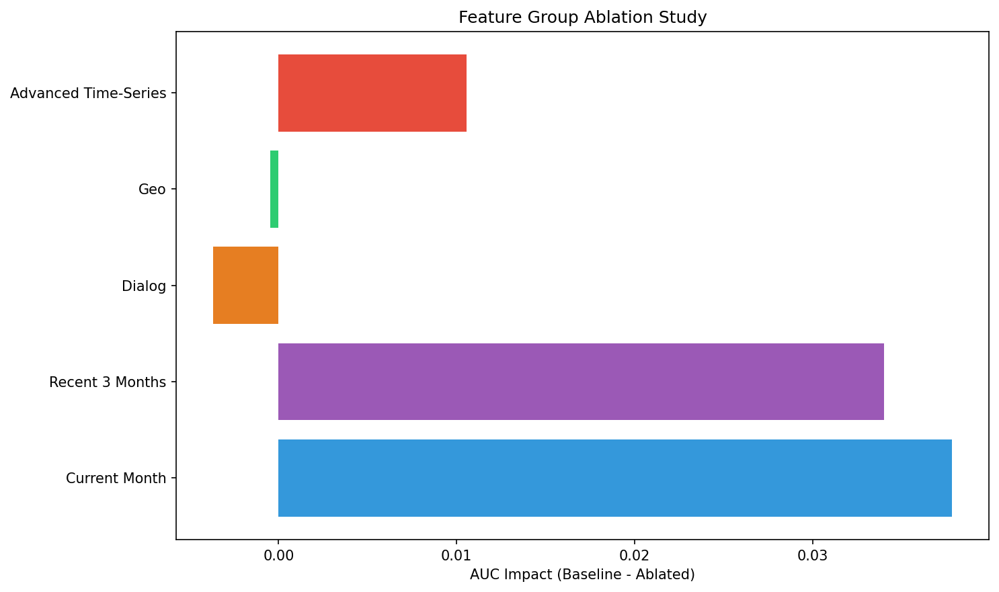
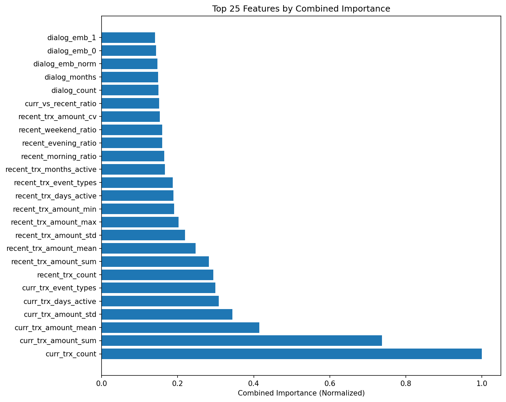

Dataset: V3 Enhanced (71 features) | Model: TCN (Temporal Convolutional Network) | Date: 2024
Note: TCN makes predictions at the client level (one prediction per client sequence), not at the sample level. The confusion matrix below shows results for 17,493 test clients.
| Architecture | Temporal Convolutional Network (TCN) |
| Hidden Dimension | 128 |
| Number of Layers | 2 |
| Kernel Size | 2 |
| Dropout | 0.3 |
| Learning Rate | 0.0005 |
| Batch Size | 128 |
| Weight Decay | 0.001 |
| Loss Function | Focal Loss (alpha=0.25, gamma=2.0) |
| Optimizer | AdamW |
| Metric | LightGBM | TCN | Difference | Winner |
|---|---|---|---|---|
| AUC-ROC | 0.9138 | 0.9109 | -0.0029 | LightGBM |
| Precision | 0.5025 | 0.5619 | +0.0594 | TCN (+11.8%) |
| Recall | 0.6830 | 0.6776 | -0.0054 | LightGBM |
| F1 Score | 0.5790 | 0.6143 | +0.0353 | TCN (+6.1%) |
Permutation importance measures how much the model's performance degrades when a feature is randomly shuffled. Higher absolute values indicate more important features.
| Rank | Feature Name | Combined Importance | Category |
|---|---|---|---|
| 1 | curr_trx_count | 1.000 | Current Month |
| 2 | curr_trx_amount_sum | 0.737 | Current Month |
| 3 | curr_trx_amount_mean | 0.414 | Current Month |
| 4 | curr_trx_amount_std | 0.344 | Current Month |
| 5 | curr_trx_days_active | 0.308 | Current Month |
| 6 | curr_trx_event_types | 0.299 | Current Month |
| 7 | recent_trx_count | 0.294 | Recent 3 Months |
| 8 | recent_trx_amount_sum | 0.282 | Recent 3 Months |
| 9 | recent_trx_amount_mean | 0.247 | Recent 3 Months |
| 10 | recent_trx_amount_std | 0.219 | Recent 3 Months |
curr_trx_count being the most important feature. This aligns with the ablation study showing
current month features have the highest impact. Recent 3-month features also rank highly, providing important context.
This analysis measures the impact of removing entire feature groups on model performance. Higher impact values indicate more important feature groups.
| Feature Group | Number of Features | AUC Impact | Remaining AUC | Interpretation |
|---|---|---|---|---|
| Current Month | 7 | -0.0378 | 0.8731 | Most critical group - removing it drops AUC by 3.78% |
| Recent 3 Months | 13 | -0.0340 | 0.8769 | Very important - provides context for current activity |
| Advanced Time-Series | 22 | -0.0106 | 0.9004 | Moderate impact - temporal patterns add value |
| Geo | 16 | +0.0005 | 0.9114 | Minimal impact - slightly improves when removed (noise) |
| Dialog | 13 | +0.0037 | 0.9146 | Negative impact - removing improves performance (likely sparse/noisy) |
Normalized combination of permutation importance and gradient attribution (when available).
| Model Type | Temporal Convolutional Network (TCN) |
| Architecture | Dilated causal convolutions with residual connections |
| Number of Features | 71 |
| Sequence Length | Variable (1-3 months per client) |
| Training Method | Early stopping on validation AUC (patience=15) |
| Best Validation AUC | 0.9241 |
| Test AUC | 0.9109 |
| Interpretability Methods | Permutation Importance, Gradient Attribution, Ablation Study |
| Permutation Sample Size | 500 test samples |